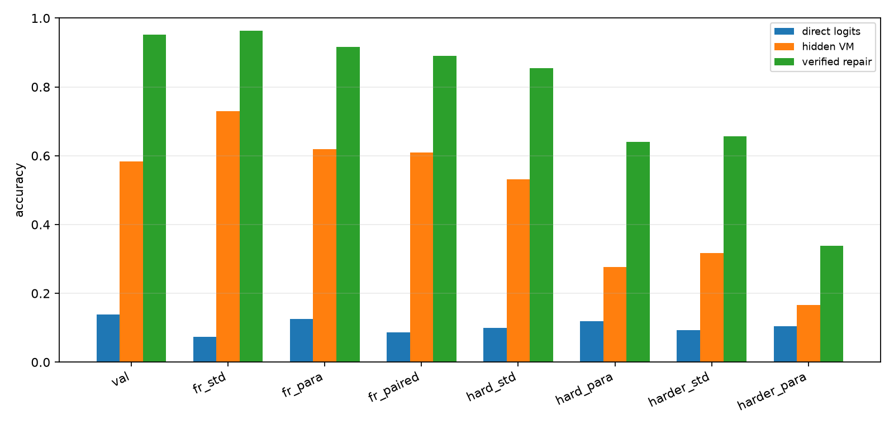
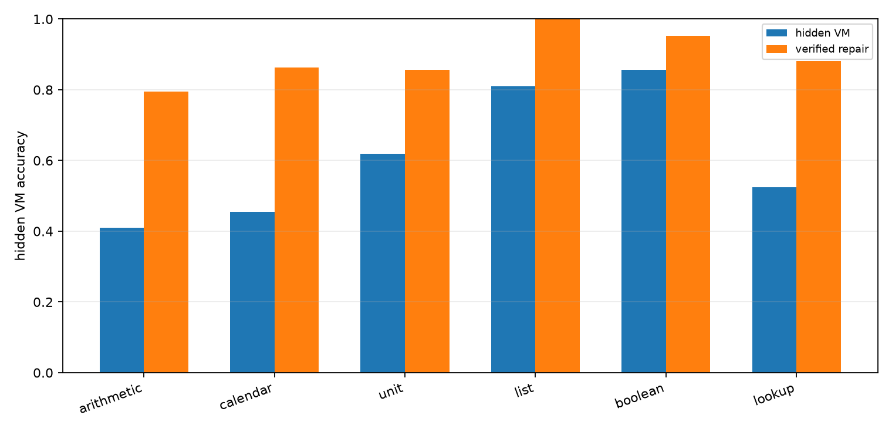
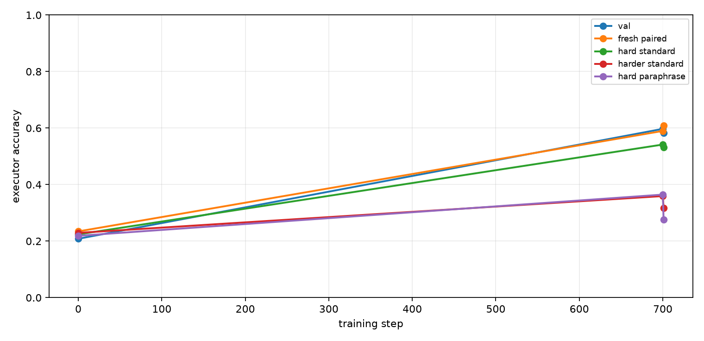
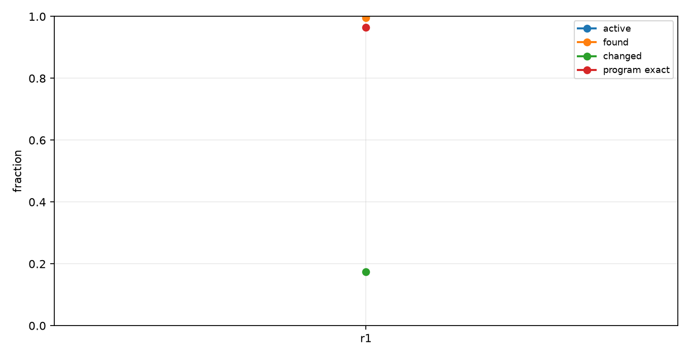
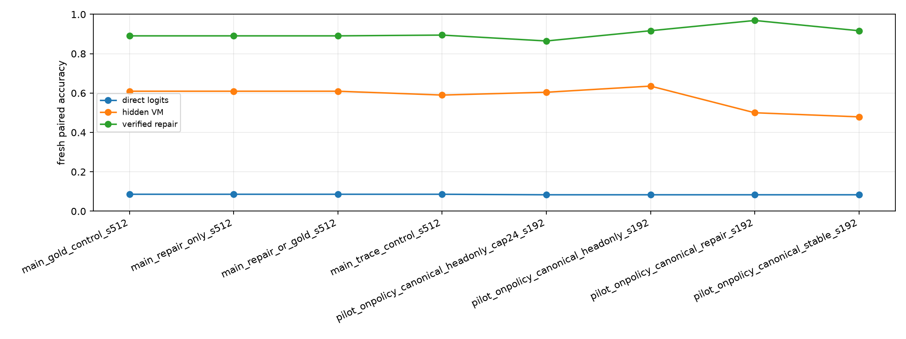

Qwen Hidden VM On-Policy Canonical Repair
Abstract
This experiment tests whether a Qwen 4B model can improve a hidden virtual-machine compiler by training on canonical on-policy repair targets. The model emits invisible typed VM slots, a deterministic runtime executes those slots, and local candidate repairs are accepted only when their full intermediate state trajectory matches the canonical trajectory.
Setup
- Primary run:
main_repair_or_gold_s512 - Model:
Qwen/Qwen3-4B - Variant:
trace - Train examples:
512 - Train steps:
700 - On-policy rounds:
1 - Epochs per round:
1 - Target mode:
repair_or_gold - Repair verifier mode:
state - VM max steps:
10 - Curriculum schedule:
4:240,6:700 - Train length range:
1to6 - Eval length:
6; hard length:8; harder length:10
The hidden VM uses typed operation slots and copied numeric arguments. Direct logits are the model's next-token numeric answer distribution at the answer marker. Hidden VM accuracy is execution of the compiled invisible program. Repair accuracy is target-aware state-verified local search around the compiled program and is reported as a headroom measurement, not as a deployable inference path.
Results
Final Splits
| Split | Direct | Hidden VM | Repair | Program exact | Repair exact | State prefix | Repair found |
|---|---|---|---|---|---|---|---|
| val_mixed | 13.9% | 58.3% | 95.1% | 41.7% | 83.3% | 70.8% | 93.1% |
| fresh_standard_mixed | 7.3% | 72.9% | 96.4% | 56.8% | 87.5% | 76.3% | 94.8% |
| fresh_paraphrase_mixed | 12.5% | 62.0% | 91.7% | 46.9% | 80.7% | 74.5% | 90.1% |
| fresh_paired_mixed | 8.6% | 60.9% | 89.1% | 44.5% | 73.4% | 72.8% | 88.3% |
| hard_standard_mixed | 9.9% | 53.1% | 85.4% | 32.3% | 64.1% | 67.5% | 83.9% |
| hard_paraphrase_mixed | 12.0% | 27.6% | 64.1% | 8.3% | 39.6% | 60.5% | 61.5% |
| harder_standard_mixed | 9.4% | 31.8% | 65.6% | 11.5% | 39.6% | 60.7% | 60.4% |
| harder_paraphrase_mixed | 10.4% | 16.7% | 33.9% | 2.1% | 10.9% | 49.9% | 26.0% |
| domain_arithmetic | 3.1% | 34.4% | 90.6% | 34.4% | 90.6% | 62.5% | 90.6% |
| domain_calendar | 12.5% | 46.9% | 100.0% | 37.5% | 75.0% | 72.4% | 100.0% |
| domain_unit | 0.0% | 37.5% | 84.4% | 37.5% | 84.4% | 66.7% | 84.4% |
| domain_list | 0.0% | 81.2% | 93.8% | 46.9% | 53.1% | 82.8% | 90.6% |
| domain_boolean | 46.9% | 93.8% | 100.0% | 53.1% | 93.8% | 72.9% | 96.9% |
| domain_lookup | 0.0% | 71.9% | 93.8% | 43.8% | 62.5% | 71.4% | 90.6% |

Domain Breakdown
| Domain | n | Direct | Hidden VM | Repair |
|---|---|---|---|---|
| arithmetic | 44.00 | 0.0% | 40.9% | 79.5% |
| calendar | 44.00 | 4.5% | 45.5% | 86.4% |
| unit | 42.00 | 0.0% | 61.9% | 85.7% |
| list | 42.00 | 2.4% | 81.0% | 100.0% |
| boolean | 42.00 | 45.2% | 85.7% | 95.2% |
| lookup | 42.00 | 0.0% | 52.4% | 88.1% |

Training Dynamics
Fresh paired hidden VM accuracy moved from 23.4% at initialization to 60.9% after the full treatment. State-verified local repair on the same split reaches 89.1%. The trace-only control scores 59.0% on fresh paired, 54.2% on hard length 8, and 35.9% on harder length 10.

On-Policy Target Quality
The final target pass used 512.00 source examples. Active rows were 100.0%; canonical repairs were found for 99.6%; changed-program repairs were 17.4%; program-exact repaired targets were 96.5%; average local candidates were 152.59.

Run Summary
| Run | Variant | Direct | Hidden VM | Repair | Program exact | State prefix |
|---|---|---|---|---|---|---|
| main_gold_control_s512 | trace | 8.6% | 60.9% | 89.1% | 44.5% | 72.8% |
| main_repair_only_s512 | trace | 8.6% | 60.9% | 89.1% | 44.5% | 72.8% |
| main_repair_or_gold_s512 | trace | 8.6% | 60.9% | 89.1% | 44.5% | 72.8% |
| main_trace_control_s512 | trace | 8.6% | 59.0% | 89.5% | 44.1% | 71.0% |
| pilot_onpolicy_canonical_headonly_cap24_s192 | trace | 8.3% | 60.4% | 86.5% | 42.7% | 71.0% |
| pilot_onpolicy_canonical_headonly_s192 | trace | 8.3% | 63.5% | 91.7% | 46.9% | 72.0% |
| pilot_onpolicy_canonical_repair_s192 | trace | 8.3% | 50.0% | 96.9% | 37.5% | 69.3% |
| pilot_onpolicy_canonical_stable_s192 | trace | 8.3% | 47.9% | 91.7% | 34.4% | 68.8% |

Interpretation
The primary measurement is fresh paired mixed-domain accuracy. Direct logits score 8.6%, while the on-policy canonical-repair hidden VM scores 60.9% (+52.3 pp). The trace-only control scores 59.0%, so the on-policy treatment changes fresh paired accuracy by +2.0 pp. State-verified local repair scores 89.1%, measuring how often the current top-k neighborhood contains a canonical executable program.
Program-exact accuracy is 44.5% and state-prefix accuracy is 72.8%. The gold-only control scores 60.9% on fresh paired and the repair-only control scores 60.9%; the repair arms therefore do not separate from an extra stabilized gold-trace pass.
The hard-length splits are the decisive stress test. The treatment trains up to length 6 and reaches 53.1% at length 8 and 31.8% at length 10. The trace-only control reaches 54.2% and 35.9% on those same standard hard splits, so the on-policy epoch does not improve length robustness.
Decision
Canonical on-policy repair should not be scaled in this form. The state verifier produces high-quality targets, but distilling those targets into the compiler gives the same fresh paired result as gold-only training and weakens hard-length robustness relative to the trace-only control. The useful outcome is the headroom measurement: state-verified local search still reaches 89.1% on fresh paired and 85.4% on hard length 8. The next step should keep repair as selection or reranking, or train only on uncertainty-targeted repairs with a much stricter preservation objective.
Limitations
- The domains are synthetic and deterministic.
- Answers are integers in a bounded value vocabulary.
- Trace supervision supplies exact hidden programs during the curriculum phase.
- Repair accuracy is target-aware and should be read as verifier-assisted headroom.
- Canonical state verification uses synthetic trajectories available in this harness.
- The runtime is fixed and hand-designed.
- Each main arm is one run unless additional seeds are added.
Artifacts
Small experiment files live in:
experiments/qwen_hidden_vm_onpolicy_canonical_repair/Large artifacts live in:
large_artifacts/qwen_hidden_vm_onpolicy_canonical_repair/checkpoints/Primary files:
analysis/summary.mdanalysis/final_metrics.csvanalysis/all_final_metrics.csvanalysis/figures/split_accuracy.pnganalysis/figures/domain_accuracy.pnganalysis/figures/training_curve.pnganalysis/figures/target_quality.pnganalysis/figures/run_summary.pngruns/main_repair_or_gold_s512/metrics.csvruns/main_repair_or_gold_s512/train_log.csvreports/qwen_hidden_vm_onpolicy_canonical_repair_paper.mdreports/qwen_hidden_vm_onpolicy_canonical_repair_paper.htmlcheckpoint_manifest.csv